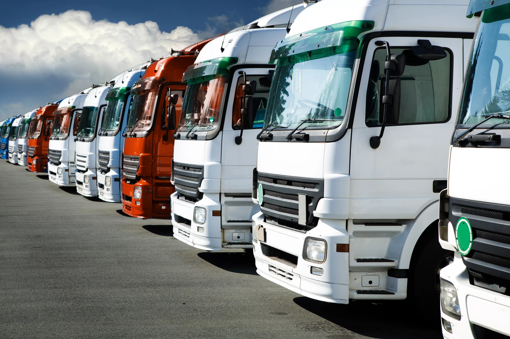

Это процесс транспортировки грузов или пассажиров с использованием
автомобильного транспорта, такого как грузовики, фургоны, автобусы и
легковые автомобили. Этот вид перевозок является одним из наиболее гибких и
широко используемых методов транспортировки благодаря своей доступности и
возможности доставки грузов "от двери до двери".
Автотранспорные перевозки
